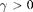
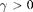
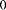

Alpha-Stable distributions in MATLAB
The following gives a brief introduction to the Levy alpha-stable distribtuion and some MATLAB functions I've written pertaining to this distribtuion. There are several issues which make dealing with these distribtuions difficult, including infinite means and variances, and the fact that the pdf or cdf cannot be written in closed form.
MATLAB does not currently have built-in support for this distribution, but there is third party software which has several well-developed methods. This software is not free (in general). Information can be found here.
Alpha-stable distributions arise naturally in the study of heavy-tailed distribtuions, and have found applications in economics and physics as models of rare, but extreme events (such as earthquakes or stock market crashes). I expect these models to grow in popularity since many believe that some of our recent financial troubles happend because analysts limited themselves to Gaussian models (which do not have heavy tails).
We'll start with some background about alpha-stable distributions, and then go through the functions I've written. An excellent introduction to these distributions is [ST].
Download these functions here
Contents
Note on Parameterization
One of the most frustrating issues in dealing with alpha-stable distribtuions is that its parameterization is not consistent across the literature (there are over half a dozen parameterizations). The parameterization we choose here is consistent with G Samorodnitsky's and MS Taqqu's 1994 book. The most common way to specify a parameterization is to look at the characteristic function of the alpha-stable random variable, which we do in the next section.
One further annoyance is that the names of the 4 parameters are also inconsistent. We choose the letters , and . The letters and are used almost everywhere you look, while the other two parameters are almost always different. We chose and as opposed to the popular and since these two letters usually mean standard deviation and mean (which is not accurate in the case of stable distributions).
NOTE: Because MATLAB interprets "gamma" as the gamma function (which is used to compute the pdf an alpha-stable dist.), we use "gam" in the code instead.
Introduction to the alpha-stable distribution
The alpha-stable distribution is a four-parameter family of distributions and is (usually) denoted by . The first parameter ![$\alpha \in (0,2]$](alphastablepub_fichiers/alphastablepub_eq67893.png) is called the characteristic exponent, and describes the tail of the distribution. The second, is the skewness, and as the name implies, specifies if the distribution is right- () or left- () skewed. The last two parameters are the scale, , and the location . One can think of these two as being similar to the variance and mean in the normal distribution in the following sense
- if , then if , . The variable is usually called a standard alpha-stable random variable (but keep in mind the word "standard" depends on the choice of parameterization!).
is called the characteristic exponent, and describes the tail of the distribution. The second, is the skewness, and as the name implies, specifies if the distribution is right- () or left- () skewed. The last two parameters are the scale, , and the location . One can think of these two as being similar to the variance and mean in the normal distribution in the following sense
- if , then if , . The variable is usually called a standard alpha-stable random variable (but keep in mind the word "standard" depends on the choice of parameterization!).
The family of alpha-stable distributions is a rich class, and includes the following distributions as subclasses:
(1) The Gaussian distribution is given by . Notice does not matter in this case.
(2) The Cauchy distribution with scale and location is given by .
(3) The Levy distribution (a.k.a Inverse-Gaussian or Pearson V), with scale and location is given by .
With the exception of the above 3 cases, the density function of an alpha-stable random variable cannot be given in closed form. However, the characteristic function can always be given. Let . The parameterization we use here corresponds to the following form of the characteristic function. For , we have
.
and for ,
.
One of the nicest properties of alpha-stable distribution is that they generalize the classical central limit theorem. Recall that if form a sequence of i.i.d. random variables with finite variance, then the quantity
converges in distribution to a standard normal random variable as , which we saw above is the same as . Now, if you remove the assumption that the 's have finite variance, but can still find a sequence of normalizing factors and such that
converges in distribution to some non-degenerate random variable , then must live in the family of alpha-stable distributions! For an example of this, see the example section below.
This is a reason many think these distributions should be used in models of stock prices. If you view the price of a stock as a accumulation of jumps, and if you assume these jumps are appoximately i.i.d. and come from a heavy-tailed distribution (with infinite variance) then this result says you should expect the limiting behavior of the stock price to have an alpha-stable law (this is a bit of an over simplification, but hopefully you get the idea of how these distributions can arise "naturally").
STBLRND
STBLERND generates random numbers form the Levy alpha-stable distribution. This function is called in any one of the following ways:
X = stblrnd(alpha,beta,gamma,delta) % Generates a single S(alpha,beta,gamma,delta) random variable. X = stblrnd(alpha,beta,gamma,delta,M) %Generates an M by M matrix of S(alpha,beta,gamma,delta) random variables. X = stblrnd(alpha,beta,gamma,delta,M,N,..) %Generates an M by N by.. array of S(alpha,beta,gamma,delta) random variables . X = stblrnd(alpha,beta,gamma,delta,[M,N,..]) %Generates an M by N by..array of S(alpha,beta,gamma,delta) random variables .
The inputs alpha,beta,gamma and delta must be scalars and lie in their appropriate ranges. If the parameter choice corresponds to a special distribution (Gaussian, Cauchy, Levy), then a faster method is used.
The algorithm used in STBLRND is based on the methods found in [CMS] and [WW].
Example: Generate 1000 random samples from the symmetric alpha-stable distribution with and make a histogram
X = stblrnd(1.5,0,1,0,1000,1); hist(X)
What you (probably) see is characteristic of stable distributions, and is the reason they are useful. We see here a lot of samples falling near the origin, and a few rare samples which are large in magnitude.
STBLPDF
STBLPDF computes the pdf of the alpha-stable distribution. This function is called as
p = stblpdf(x,alpha,beta,gamma,delta) % Computes the pdf of the S(alpha,beta,gamma,delta) distribution at the values in x.
x can be any sized array, and alpha,beta,gamma and delta must be scalars. The output p is the same size as x
STBLEPDF also accepts one or both of the following options
p = stblpdf(x,alpha,beta,gamma,delta,'quick') % Uses a faster, but less accurate algorithm. Useful for plotting. p = stblpdf(x,alpha,beta,gamma,delta,TOL) % Computes the pdf using an absolute error tolerance of TOL.
By default, stblpdf uses a TOL of 1e-12 for the full algorithm, and 1e-6 for the 'quick' algorithm.
The algorithm for stblpdf comes down to computing the numerical integrals found in [JPN]. In this code, I used MATLAB's QUADV function, which is vectorized quadrature. It is very fast and does an excellent job. For large values of x, the integrand we must compute is mostly zero, except for a very thin peak, which QUADV might miss. To avoid this, the full algorithm locates this peak using a bisection method, and then calls QUADV twice, once to compute to left of the peak, and once to compute to the right of the peak. The 'quick' algorithm skips the step of locationg the peak and only calls QUADV once.
Example 1: Plot alpha-stable densities
figure(1) x = -5:.01:5; beta = 0; gam = 1; delta = 0; plot( x , stblpdf(x,.5,beta,gam,delta,'quick'),... x , stblpdf(x,.75,beta,gam,delta,'quick'),... x , stblpdf(x,1,beta,gam,delta,'quick'),... x , stblpdf(x,1.25,beta,gam,delta,'quick'),... x , stblpdf(x,1.5,beta,gam,delta,'quick') ) axis([-5 5 0 .7]); title('Symmetric \alpha-stable densities, \beta = 0, \gamma = 1, \delta = 0'); legend('\alpha = 0.5',... '\alpha = 0.75',... '\alpha = 1.0',... '\alpha = 1.25',... '\alpha = 1.5' ) figure(2) x = -5:.01:5; beta = 1; gam = 1; delta = 0; plot( x , stblpdf(x,.5,beta,gam,delta,'quick'),... x , stblpdf(x,.75,beta,gam,delta,'quick'),... x , stblpdf(x,1,beta,gam,delta,'quick'),... x , stblpdf(x,1.25,beta,gam,delta,'quick'),... x , stblpdf(x,1.5,beta,gam,delta,'quick') ) axis([-5 5 0 .6]); title('Skewed \alpha-stable densities, \beta = 0.5,\gamma = 1, \delta = 0'); legend('\alpha = 0.5',... '\alpha = 0.75',... '\alpha = 1.0',... '\alpha = 1.25',... '\alpha = 1.5' )
Example 2: Check accuracy for large x. Eventually, the 'quick' option will fail to give a good result. The red dashed line in the plot below is a known, closed form asymptotic approximation which is only valid for large x.
x = 10.^(-2:.25:7); alpha = 1.5; beta = 0; gam = 1; delta = 0; C = (1 - alpha)/(gamma(2 - alpha)*cos(pi*alpha/2)); loglog( x , stblpdf( x,alpha,beta,gam,delta,'quick'), 'g-*', ... x , stblpdf( x,alpha,beta,gam,delta), 'b-o', ... x , C/2 * alpha * x.^(-alpha - 1), 'r--') legend('quick','full', 'asymptotic formula') title('Comparison of "quick" option to full algorithm for large x' )
We see the 'quick' option matches the full algorithm out until x ~ 10^5, then it starts to grossly underestimate the pdf. Meanwhile, the full algorithm continues to do an excellent job well into the tails of the pdf.
STBLCDF
STBLCDF computes the cdf of the alpha-stable distribution. This function is called as
F = stblcdf(x,alpha,beta,gamma,delta) % Computes the cdf of the S(alpha,beta,gamma,delta) distribution at the values in x.
x can be any sized array, and alpha,beta,gamma and delta must be scalars. The output F is the same size as x
STBLECDF also accepts the following option
p = stblcdf(x,alpha,beta,gamma,delta,TOL) % Computes the cdf using an absolute error tolerance of TOL.
The default for TOL is 1e-8.
Similar to STBLPDF, the algorithm for STBLCDF comes down to computing the integrals found in [JPN]. Again, MATLAB's QUADV function was used for this. to avoid numerical instabilities in the integrand, I truncated the endpoint of the integrand slightly.
Example: Plot alpha-stable cdfs
figure(3) x = -5:.01:5; beta = 0; gam = 1; delta = 0; plot(x, stblcdf(x,.1,beta,gam,delta),... x , stblcdf(x,.5,beta,gam,delta),... x , stblcdf(x,.75,beta,gam,delta),... x , stblcdf(x,1,beta,gam,delta),... x , stblcdf(x,1.25,beta,gam,delta),... x , stblcdf(x,1.5,beta,gam,delta) ) axis([-5 5 0 1]); title('Symmetric \alpha-stable CDFs, \beta = 0, \gamma = 1, \delta = 0'); legend('\alpha = 0.1',... '\alpha = 0.5',... '\alpha = 0.75',... '\alpha = 1.0',... '\alpha = 1.25',... '\alpha = 1.5',... 'Location','northwest'); figure(4) x = -5:.01:5; beta = .5; gam = 1; delta = 0; quick = true; plot( x, stblcdf(x,.1,beta,gam,delta),... x , stblcdf(x,.5,beta,gam,delta),... x , stblcdf(x,.75,beta,gam,delta),... x , stblcdf(x,1,beta,gam,delta),... x , stblcdf(x,1.25,beta,gam,delta),... x , stblcdf(x,1.5,beta,gam,delta) ) axis([-5 5 0 1]); title('Skewed \alpha-stable CDFs, \beta = 0.5, \gamma = 1, \delta = 0'); legend('\alpha = 0.1',... '\alpha = 0.5',... '\alpha = 0.75',... '\alpha = 1.0',... '\alpha = 1.25',... '\alpha = 1.5',... 'Location','northwest');
STBLINV
STBLINV computes the inverse alpha-stable CDF. This function is called as
X = stblinv(u,alpha,beta,gam,delta)
u can be any sized array, and alpha,beta,gam and delta must be scalars. The output x will be the same size as u.
The algorithm used to compute stblinv is one that I cooked up - it uses a combination of Newton's method and the bisection method, together with the functions stblcdf and stblpdf, to solve the equation F(X) = U for X, where F is the cdf of an alpha-stable distribution. For starting values, I calculated a large table of exact values for .1 < alpha < 2, 0<=beta <= 1 and .1 < u < .9. For u outside the range .1<u<.9, I used the asymptotic expression for the cdf.
Example 1: Plot some alpha-stable inverse cdf's
figure(4) u = .01:.01:.99; beta = 0; gam = 1; delta = 0; plot(u , stblinv(u,.5,beta,gam,delta),... u , stblinv(u,.75,beta,gam,delta),... u , stblinv(u,1,beta,gam,delta),... u , stblinv(u,1.25,beta,gam,delta),... u , stblinv(u,1.5,beta,gam,delta) ) axis([0 1 -2 2]); title('Symmetric inverse \alpha-stable CDFs, \beta = 0, \gamma = 1, \delta = 0'); legend('\alpha = 0.5',... '\alpha = 0.75',... '\alpha = 1.0',... '\alpha = 1.25',... '\alpha = 1.5',... 'Location','northwest'); figure(5) u = .01:.01:.99; beta = .5; gam = 1; delta = 0; plot( u , stblinv(u,.5,beta,gam,delta),... u , stblinv(u,.75,beta,gam,delta),... u , stblinv(u,1,beta,gam,delta),... u , stblinv(u,1.25,beta,gam,delta),... u , stblinv(u,1.5,beta,gam,delta) ) axis([0 1 -2 2]); title('Skewed inverse \alpha-stable CDFs, \beta = .5, \gamma = 1, \delta = 0'); legend( '\alpha = 0.5',... '\alpha = 0.75',... '\alpha = 1.0',... '\alpha = 1.25',... '\alpha = 1.5',... 'Location','northwest');
Example 2: Check that we really are inverting the alpha-stable CDF
u = [.01:.01:.99];

alpha = 1.5;
beta = .5;
gam = 1;
delta = 0;
w = stblcdf( stblinv( u,alpha,beta,gam,delta),alpha,beta,gam,delta) % This should return u.

check = all( abs(w-u) < 1e-6 )

w =
Columns 1 through 18
0.0100 0.0200 0.0300 0.0400 0.0500 0.0600 0.0700 0.0800 0.0900 0.1000 0.1100 0.1200 0.1300 0.1400 0.1500 0.1600 0.1700 0.1800
Columns 19 through 36
0.1900 0.2000 0.2100 0.2200 0.2300 0.2400 0.2500 0.2600 0.2700 0.2800 0.2900 0.3000 0.3100 0.3200 0.3300 0.3400 0.3500 0.3600
Columns 37 through 54
0.3700 0.3800 0.3900 0.4000 0.4100 0.4200 0.4300 0.4400 0.4500 0.4600 0.4700 0.4800 0.4900 0.5000 0.5100 0.5200 0.5300 0.5400
Columns 55 through 72
0.5500 0.5600 0.5700 0.5800 0.5900 0.6000 0.6100 0.6200 0.6300 0.6400 0.6500 0.6600 0.6700 0.6800 0.6900 0.7000 0.7100 0.7200
Columns 73 through 90
0.7300 0.7400 0.7500 0.7600 0.7700 0.7800 0.7900 0.8000 0.8100 0.8200 0.8300 0.8400 0.8500 0.8600 0.8700 0.8800 0.8900 0.9000
Columns 91 through 99
0.9100 0.9200 0.9300 0.9400 0.9500 0.9600 0.9700 0.9800 0.9900
check =
1
STBLFIT
STBLFIT fits an alpha-stable distribution to a data set. The function is called as
p = stblfit(X)
where X is the data set to which you want to fit a stable distribution. The output p will be a column vector containing the 4 parameters.
There are two algorithms built into stblfit. The first, 'ecf', is based on empirical characteristic function methods of Koutrouvelis ([IAKa] & [IAKb]). This method is the default. The other method, 'percentile', is the simplier, faster but less accurate method of McCulloch [JHM]. These two methods are called as
stblfit(X,'ecf') - Koutrouvelis's method stblfit(X,'percentile') - McCulloch's method
STBLFIT also accepts an options structure created with the STATSET command. This gives you control over the iterative procedure in the 'ecf' method. This options stucture must appear as the last argument of STBLFIT. Availiable options are
'Display' - When set to 'iter', will display the values of alpha,beta,gamma and delta in each iteration. Default is 'off'.
'MaxIter' - Specifies the maximum number of iterations allowed in estimation. Default is 5.
'TolX' - Specifies threshold to stop iterations. Default is 0.01.
For an example on the use of STBLFIT, see the example below.
Example: Investigate the distribution of a sum of Pareto random variables
Consider the random variable whose CDF is given by
and is  otherwise. We can sample from this distribution easily, as the CDF above can be inverted to give
.
From the tail of the CDF, it is clear that X has an infinite mean, hence we do not expect the central limit to apply here. However, consider the scaled sum
where are independent samples of . By using the characteristic function of , one can show that this sum converges in distribution to an alpha-stable distribution , (we'll give exact values of these parameters later).
To verify this, lets create a sample from for large, and use STBLFIT to estimate these parameters to see if a stable distribution seems like the right fit.
The following code generates 100 samples of , then adds them and divides by to generate sample . This is repeated 300 times to get a sample , i=1,...300. Next, stblfit is used to estimate the parameters and .
N = 300; sampsize = 100; s = RandStream.create('mrg32k3a','NumStreams',1,'Seed',50); % For reproducibility X = zeros(N,1); for i = 1:N % Generate a normalized sum of Pareto-type random variables Samp = 1./rand(s,sampsize,1).^(4/3); X(i) = sum(Samp)/sampsize^(4/3); % Normalize sum end % estimate parameters p = stblfit(X,'ecf',statset('Display','iter')); % plot data with fit parameters xmax = 15; H = figure(1); set(H,'Position', [517 626 939 410]); clf; title('Stable fit to sums of Pareto random variables'); subplot(1,2,1) hold on stem(X(X < xmax),stblpdf(X(X<xmax),p(1),p(2),p(3),p(4),'quick')); x = 0:.1:xmax; plot(x,stblpdf(x,p(1),p(2),p(3),p(4),'quick'),'r-') hold off xlabel(['\alpha_0 = ',num2str(p(1)),' \beta_0 = ',num2str(p(2)),' \gamma_0 = ',num2str(p(3)),' \delta_0 = ',num2str(p(4))]); legend('Data','Fit stable density') subplot(1,2,2) CDF = prctile(X,[1:75]); cmin = CDF(1); cmax = CDF(end); x = cmin:.1:cmax; estCDF = stblcdf(x,p(1),p(2),p(3),p(4)); plot(CDF,[.01:.01:.75],'b.',x,estCDF,'r-') legend('Empirical CDF','Estimated CDF','Location','northwest')
iteration alpha beta gamma delta
0 0.655308 1 1.10274 1.69911
1 0.638528 1.0271 1.65565 0.636399
2 0.735853 0.953656 1.59847 -0.107348
3 0.746854 0.962963 1.59705 -0.311888
4 0.747544 0.966093 1.59615 -0.338053
With a little bit of work, one can show that in the limit of an infinite sum, the true values of and are given by
, , , ,
Of course, we expect some bias in our estimates since we are using a sum of 100 independent samples, but you can see that our estimates are good, and the location of the data seems to follow the shape of the plotted density and CDF.
References
[CMS] J.M. Chambers, C.L. Mallows and B.W. Stuck (1976) "A Method for Simulating Stable Random Variables" JASA, Vol. 71, No. 354. pages 340-344
[IAKa] I. A. Koutrouvelis (1980) "Rregression-Type Estimation of the Paramters of Stable Laws. JASA, Vol 75, No. 372
[IAKb] I. A. Koutrouvelis (1981) "An Iterative Procedure for the estimation of the Parameters of Stable Laws" Commun. Stat. - Simul. Comput. 10(1), pages 17-28
[JHM] J. H. McCulloch (1986) "Simple Consistent Estimators of Stable Distribution Parameters" Cummun. Stat. Simul. Comput. 15(4)
[JPN] J. P. Nolan (1997) "Numerical Calculation of Stable Densities and Distribution Functions" Commun. Statist. - Stochastic Modles, 13(4), 759-774
[ST] G Samorodnitsky, MS Taqqu (1994) "Stable non-Gaussian random processes: stochastic models with infinite variance" CRC Press
[WW] Aleksander Weron and Rafal Weron (1995) "Computer Simulation of Levy alpha-Stable Variables and Processes" Lec. Notes in Physics, 457, pages 379-392